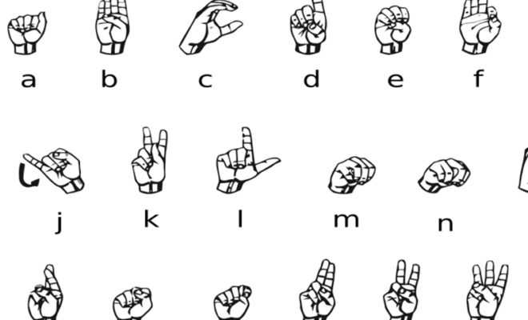

We knew going into this project it would be very challenging because object detection and machine learning on pictures was completely new to the entire group. During the two weeks there were many challenges that needed to be overcome, and most were.
The coding for ML5 was straight forward, there were issue
Training takes 6 to 20 hours to train a model depending on computer hardware
While our intentions were pure, the results have room for improvement and two weeks was not nearly enough time to work on all the moving parts.